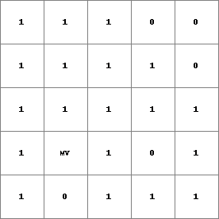
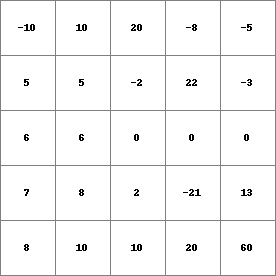
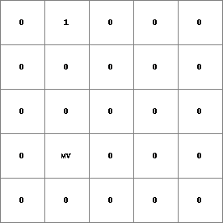

view
TRUE or FALSE value for visibility from viewpoint(s) defined by a digital elevation model
Result = view(elevation, viewpoints)
All cells in viewpoints with a value 1 (TRUE) are used as viewpoints. The 3D landscape over which is looked out is defined by the elevation model elevation. Each cell which is visible from the TRUE cells on viewpoints is assigned a 1 (TRUE) on Result. Cells which are not visible are assigned a 0 (FALSE) on Result.
A cell with a missing value on elevation is assigned a missing value on Result. If elevation has a missing value on the line of sight between a cell and its viewpoint from which it can potentially be seen, the cell is considered as non visible from that viewpoint. If there isn’t a different viewpoint from which the cell can be seen, the cell is assigned a 0 (FALSE) on Result.
This operation belongs to the group of Neigbourhood operator; operators for visibility analysis
| Result.map | Dem.map | Points.map |
|  |  |  |